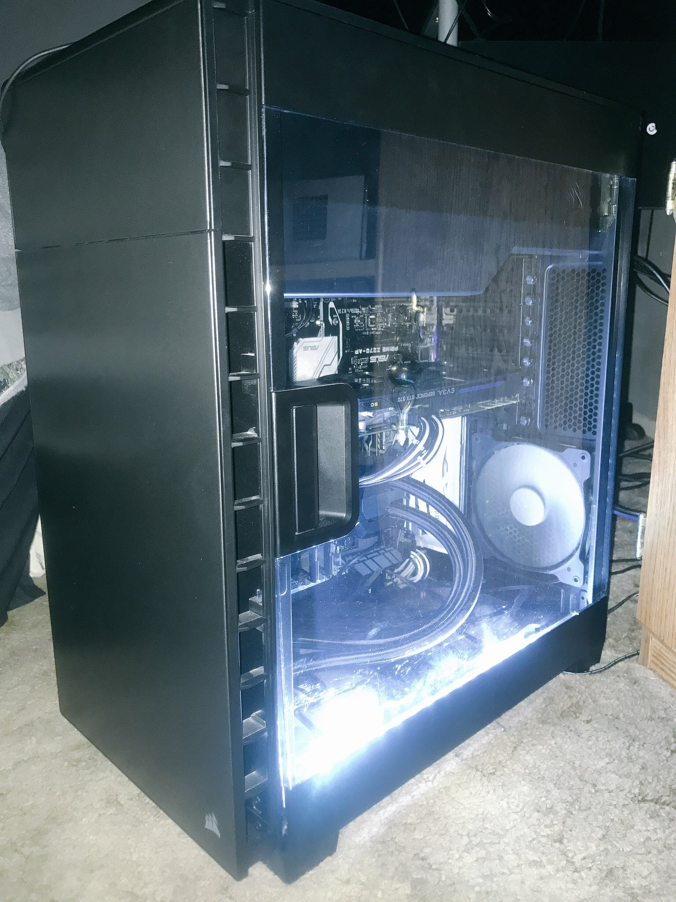
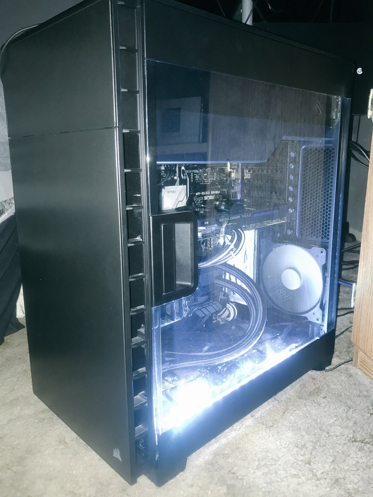
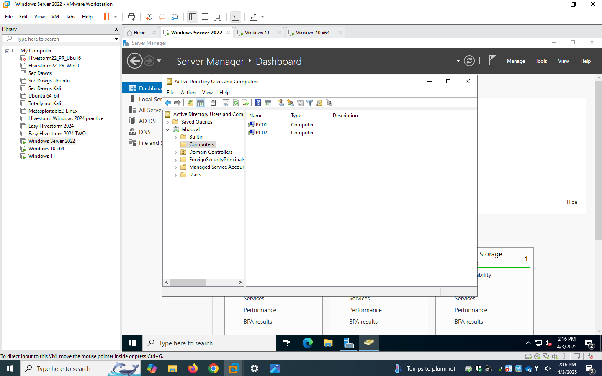

How I Got Started in IT
April 18, 2025
My passion for IT began when I built my first PC. From there, I started exploring Linux, networking, and security. This post shares what inspired me to pursue the field professionally.
Thoughts, tips, and experiences from my journey in tech.
My passion for IT began when I built my first PC. From there, I started exploring Linux, networking, and security. This post shares what inspired me to pursue the field professionally.
I recently created a lab environment with Windows Server and Active Directory. It helped me understand how enterprise systems are managed. Here's what I learned and how it improved my skills.
From Wireshark to Nmap and beyond—these are the tools I've found most useful as an aspiring cybersecurity professional. I share tips and real-world examples in this post.